| I l@ve RuBoard |
|
6.4 Climbing the GUI Learning CurveOn to the details. Let's start out by quickly stepping through a few small examples that illustrate basic concepts, and show the windows they create on the screen. The examples will become more sophisticated as we move along. 6.4.1 "Hello World" in Four Lines (or Less)The usual first example for GUI systems is to show how to display a "Hello World" message in a window. As coded in Example 6-1, it's just four lines in Python. Example 6-1. PP2E\Gui\Intro\gui1.pyfrom Tkinter import Label # get a widget object widget = Label(None, text='Hello GUI world!') # make one widget.pack() # arrange it widget.mainloop() # start event loop This is a complete Python Tkinter GUI program. When this script is run, we get a simple window with a label in the middle; it looks like Figure 6-1 on Windows. Figure 6-1. "Hello World" (gui1) on Windows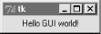This isn't much to write home about yet; but notice that this is a completely functional, independent window on the computer's display. It can be maximized to take up the entire screen, minimized to hide it in the system bar, and resized. Click on the window's "X" box in the top right to kill the window and exit the program. The script that builds this window is also fully portable -- when this same file is run on Linux it produces a similar window, but it behaves according to the underlying Linux window manager. For instance, Figures Figure 6-2 and Figure 6-3 show this simple script in action on the Linux X Windows system, under the KDE and Gnome window managers, respectively. Even on the same operating system, the same Python code yields a different look and feel for different window systems. Figure 6-2. "Hello World" on Linux with KDE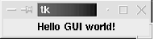Figure 6-3. "Hello World" on Linux with Gnome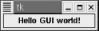The same script file would look different still when run on Macintosh and other Unix-like window managers. On all platforms, though, its basic functional behavior will be the same. 6.4.2 Tkinter Coding BasicsThe gui1 script is a trivial example, but it illustrates steps common to most Tkinter programs. This Python code:
The mainloop method called last puts the label on the screen and enters a Tkinter wait state, which watches for user-generated GUI events. Within the mainloop function, Tkinter internally monitors things like the keyboard and mouse, to detect user-generated events. Because of this model, the mainloop call here never returns to our script while the GUI is displayed on-screen.[6] As we'll see when we reach larger scripts, the only way we can get anything done after calling mainloop is to register callback handlers to respond to events.
Note that you really need both steps 3 and 4 to open this script's GUI. To display a GUI's window at all, you need to call mainloop; to display widgets within the window they must be packed (or otherwise arranged) so that the Tkinter geometry manager knows about them. In fact, if you call either mainloop or pack without calling the other, your window won't show up as expected: a mainloop without a pack shows an empty window, and a pack without a mainloop in a script shows nothing since the script never enters an event wait state (try it). Since the concepts illustrated by this simple script are at the core of most Tkinter programs, let's take a deeper look a some of them before moving on. 6.4.2.1 Making widgetsWhen widgets are constructed in Tkinter, we can specify how they should be configured. The gui1 script passes two arguments to the Label class constructor:
As we'll see, the parent-widget argument is the hook we use to build-up complex GUIs as widget trees. Tkinter works on a "what-you-build-is-what-you-get" principle: we construct widget object trees as models of what we want to see on the screen, and then ask the tree to display itself by calling mainloop. 6.4.2.2 Geometry managersThe pack widget method called by the gui1 script invokes the packer geometry manager -- one of three ways to control how widgets are arranged in a window. Tkinter geometry managers simply arrange one or more widgets within a container (sometimes called a parent, or master). Both top-level windows and frames (a special kind of widget we'll meet later) can serve as containers, and containers may be nested inside other containers to build hierarchical displays. The packer geometry manager uses constraint option settings to automatically position widgets in a window. Scripts supply higher-level instructions (e.g., "attach this widget to the top of its container, and stretch it to fill its space vertically"), not absolute pixel coordinates. Because such constraints are so abstract, the packer provides a powerful and easy-to-use layout system. In fact, you don't even have to specify constraints -- if you don't pass any arguments to pack, you get default packing, which attaches the widget to side top. We'll visit the packer repeatedly in this chapter, and use it in many of the examples in this book. In Chapter 8 we will also meet an alternative grid geometry manager and layout system that arranges widgets within a container in tabular form (i.e., by rows and columns). A third alternative, the placer geometry manager system, is described in Tk documentation, but not in this book; it's less popular than the pack and grid managers, and can be difficult to use for larger GUIs. 6.4.2.3 Running GUI programsLike all Python code, the module in Example 6-1 can be started in a number of ways: by running it as a top-level program file: C:\...\PP2E\Gui\Intro>python gui1.py by importing it from a Python session or another module file: >>> import gui1 by running it as a Unix executable, if we add the special #! line at the top: % gui1.py & and in any other way that Python programs can be launched on your platform. For instance, the script can also be run by clicking on the file's name in a Windows file explorer, and its code can be typed interactively at the >>> prompt. It can even be run from a C program, by calling the appropriate embedding API function (see Chapter 20, for details). In other words, there really are no special rules to follow when running GUI Python code. The Tkinter interface (and Tk itself) are linked into the Python interpreter. When a Python program calls GUI functions, they're simply passed to the embedded GUI system behind the scenes. That makes it easy to write command-line tools that pop up windows; they are run the same way as the purely text-based scripts we studied in the prior part of this book. 6.4.2.4 Avoiding DOS consoles on WindowsEarlier in this book we learned that if a program's name ends in a .pyw extension instead of .py, the Windows Python port does not pop up a DOS console box to serve as its standard streams when the file is launched by clicking its filename icon. Now that we've finally started making windows of our own, that filename trick will start to become even more useful. If you just want to see the windows that your script makes no matter how it is launched, be sure to name your GUI scripts with a .pyw if they might be run on Windows. For instance, clicking on the file in Example 6-2 in a Windows explorer creates just the window in Figure 6-1. Example 6-2. PP2E\Gui\Intro\gui1.pyw...same as gui1.py... You can also avoid the DOS popup on Windows by running the program with the pythonw.exe executable, not python.exe (in fact, .pyw files are simply registered to be opened by pythonw). On Linux, the .pyw doesn't hurt, but isn't necessary -- there is no notion of a streams popup on Unix-like machines. On the other hand, if your GUI scripts might run on Windows in the future, adding an extra "w" at the end of their names now might save porting effort later. In this book, .py filenames are still sometimes used to pop up console windows for viewing printed messages on Windows. 6.4.3 Tkinter Coding AlternativesAs you might expect, there are a variety of ways to code the gui1 example. For instance, if you want to make all your Tkinter imports more explicit in your script, grab the whole module and prefix all its names with the module's name, as in Example 6-3. Example 6-3. PP2E\Gui\Intro\gui1b.py - import versus fromimport Tkinter widget = Tkinter.Label(None, text='Hello GUI world!') widget.pack() widget.mainloop() That will probably get tedious in realistic examples, though -- Tkinter exports dozens of widget classes and constants that show up all over Python GUI scripts. In fact, it is usually easier to use a * to import everything from the Tkinter module by name in one shot. This is demonstrated in Example 6-4. Example 6-4. PP2E\Gui\Intro\gui1c.py - roots, sides, pack in-placefrom Tkinter import * root = Tk() Label(root, text='Hello GUI world!').pack(side=TOP) root.mainloop() The Tkinter module goes out of its way to only export things that we really need, so it's one of the few for which the * import form is relatively safe to apply.[7] The TOP constant in the pack call here, for instance, is one of those many names exported by the Tkinter module. It's simply a variable name (TOP="top") preassigned in Tkconstants, a module automatically loaded by Tkinter.
When widgets are packed, we can specify which side of their parent they should be attached to -- TOP, BOTTOM, LEFT, or RIGHT. If no side option is sent to pack (as in prior examples), a widget is attached to its parent's TOP by default. In general, larger Tkinter GUIs can be constructed as sets of rectangles, attached to the appropriate sides of other, enclosing rectangles. As we'll see later, Tkinter arranges widgets in a rectangle according to both their packing order and their side attachment options. When widgets are gridded, they are assigned row and column numbers instead. None of this will become very meaningful, though, until we have more than one widget in a window, so let's move on. Notice that this version calls the pack method right away after creating the label, without assigning it a variable. If we don't need to save a widget, we can pack it in place like this to eliminate a statement. We'll use this form when a widget is attached to a larger structure and never again referenced. This can be tricky if you assign the pack result, though, but I'll postpone an explanation of why until we've covered a few more basics. We also use a Tk widget class instance as the parent here, instead of None. Tk represents the main ("root") window of the program -- the one that starts when the program does. Tk is also used as the default parent widget, both when we don't pass any parent to other widget calls, and when we pass the parent as None. In other words, widgets are simply attached to the main program window by default. This script just makes this default behavior explicit, by making and passing the Tk object itself. In Chapter 7, we'll see that Toplevel widgets are typically used to generate new pop-up windows that operate independently of the program's main window. In Tkinter, some widget methods are exported as functions too, and this lets us shave Example 6-5 to just three lines of code. Example 6-5. PP2E\Gui\Intro\gui1d.py - a minimal versionfrom Tkinter import * Label(text='Hello GUI world!').pack() mainloop() The Tkinter mainloop can be called with or without a widget (i.e., as a function or method). We didn't pass Label a parent argument in this version either: it simply defaults to None when omitted (which in turn defaults to Tk). But relying on that default is less useful once we start building larger displays -- things like labels are more typically attached to other widget containers. 6.4.3.1 Widget resizing basicsTop-level windows, like the one all of the coding variants seen thus far build, can normally be resized by the user -- simply drag out the window with your mouse. Figure 6-4 shows how our window looks when it is expanded. Figure 6-4. Expanding gui1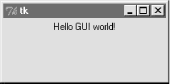This isn't very good -- the label stays attached to the top of the parent window instead of staying in the middle on expansion -- but it's easy to improve on this with a pair of pack options, demonstrated in Example 6-6. Example 6-6. PP2E\Gui\Intro\gui1e.py - expansionfrom Tkinter import * Label(text='Hello GUI world!').pack(expand=YES, fill=BOTH) mainloop() When widgets are packed, we can specify whether a widget should expand to take up all available space, and if so, how it should stretch to fill that space. By default, widget are not expanded when their parent is. But in this script, names YES and BOTH (imported from the Tkinter module) specify that the label should grow along with its parent, the main window. It does, in Figure 6-5. Figure 6-5. gui1e with widget resizing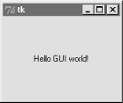Technically, the packer geometry manager assigns a size to each widget in a display, based on what it contains (text string lengths, etc.). By default, a widget only can occupy its allocated space, and is no bigger than its assigned size. The expand and fill options let us be more specific about such things:
Combinations of these two options produce different layout and resizing effects, some of which only become meaningful when there are multiple widgets in a window. For example, using expand without fill centers the widget in the expanded space, and the fill option can specify vertical stretching only (fill=Y), horizontal stretching only (fill=X), or both (fill=BOTH). By providing these constraints and attachment sides for all widgets in a GUI, we can control the layout in fairly precise terms. In later chapters, we'll find that the grid geometry manager uses a different resizing protocol entirely. This all can be confusing the first time you hear it, and we'll return to this later. But if you're not sure what an expand and fill combination will do, simply try it out -- this is Python after all. For now, remember that the combination of expand=YES and fill=BOTH is perhaps the most common setting; it means "expand my space allocation to occupy all available space, and stretch me to fill the expanded space in both directions." For our "Hello World" example, the net result is that label grows as the window is expanded, and so is always centered. 6.4.3.2 Configuring widget options and window titlesSo far, we've been telling Tkinter what to display on our label by passing its text as a keyword argument in label constructor calls. It turns out that there are two other ways to specify widget configuration options. In Example 6-7, the text option of the label is set after it is constructed, by assigning to the widget's text key -- widget objects overload index operations such that options are also available as mapping keys, much like a dictionary. Example 6-7. PP2E\Gui\Intro\guif.py - option keysfrom Tkinter import * widget = Label() widget['text'] = 'Hello GUI world!' widget.pack(side=TOP) mainloop() More commonly, widget options can be set after construction by calling the widget config method, as in Example 6-8. Example 6-8. PP2E\Gui\Intro\gui1g.py - config and titlesfrom Tkinter import *
root = Tk()
widget = Label(root)
widget.config(text='Hello GUI world!')
widget.pack(side=TOP, expand=YES, fill=BOTH)
root.title('gui1g.py')
root.mainloop()
The config method (which can also be called by its synonym, configure) can be called at any time after construction to change the appearance of a widget on the fly. For instance, we could call this label's config method again later in the script to change the text that it displays; watch for such dynamic reconfigurations in later examples in this part of the book. Notice that this version also calls a root.title method -- this call sets the label that appears at the top of the window, as pictured in Figure 6-6. In general terms, top-level windows like the Tk root here export window-manager interfaces: things that have to do with the border around the window, not its contents. Figure 6-6. gui1g with expansion and a window title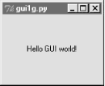Just for fun, this version also centers the label on resizes by setting the expand and fill pack options too. In fact, this version makes just about everything explicit, and is more representative of how labels are often coded in full-blown interfaces -- their parents, expansion policies, and attachments are usually all spelled out, rather than defaulted. 6.4.3.3 One more for old times' sakeFinally, if you are both a minimalist and nostalgic for old Python code, you can also program this "Hello World" example as in Example 6-9. Example 6-9. PP2E\Gui\Intro\gui1-old.py - dictionary callsfrom Tkinter import *
Label(None, {'text': 'Hello GUI world!', Pack: {'side': 'top'}}).mainloop()
This makes the window in just two lines -- albeit gruesome ones! This scheme relies on an old coding style that was widely used until Python 1.3 that passed configuration options in a dictionary instead of keyword arguments.[8] In this scheme, packer options can be sent as values of the key Pack (a class in the Tkinter module).
The dictionary call scheme still works, and you may see it in old Python code, but please don't do this -- use keywords to pass options, and explicit pack method calls in your Tkinter scripts instead. In fact, the only reason I didn't cut this example completely is that dictionaries can still be useful if you want to compute and pass a set of options dynamically. On the other hand, the built-in apply function now also allows you to pass an explicit dictionary of keyword arguments in its third argument slot, so there's no compelling reason to ever use the pre-1.3 Tkinter dictionary call form at all. 6.4.3.4 Packing widgets without saving themIn gui1c.py (shown in Example 6-4), I started packing labels without assigning them to names. This works, and is an entirely valid coding style; but because it tends to confuse beginners at first glance, I need to explain why it works in more detail here. In Tkinter, Python class objects correspond to real objects displayed on a screen; we make the Python object to make a screen object, and call the Python object's methods to configure that screen object. Because of this correspondence, the lifetime of the Python object must generally correspond to the lifetime of the corresponding object on the screen. Luckily, Python scripts don't usually need to care about managing object lifetimes. In fact, they do not normally need to maintain a reference to widget objects created along the way at all, unless they plan to reconfigure those objects later. For instance, it's common in Tkinter programming to pack a widget immediately after creating it, if no further reference to the widget is required: Label(text='hi').pack() # okay This expression is evaluated left to right as usual -- it creates a new label, and then immediately calls the new object's pack method, to arrange it in the display. Notice, though, that the Python Label object is temporary in this expression; because it is not assigned to a name, it would normally be garbage collected (destroyed and reclaimed) by Python immediately after running its pack method. However, because Tkinter emits Tk calls when objects are constructed, the label will be drawn on the display as expected, even though we haven't held on to the corresponding Python object in our script. In fact, Tkinter internally cross-links widget objects into a long-lived tree used to represent the display, so the Label object made during this statement really is retained, even if not by our code.[9]
In other words, your scripts don't generally need to care about widget object lifetimes, and it's okay to make widgets and pack them right away in the same statement. But that does not mean that it's okay to say something like this: widget = Label(text='hi').pack() # wrong! ...use widget... This statement almost seems like it should assign a newly packed label to name widget, but it does not. In fact, it's really a notorious Tkinter beginner's mistake. The widget pack method packs the widget but does not return the widget thus packed. Really, pack returns the Python object None; after such a statement, widget will be a reference to None, and any further widget operations through that name will fail. For instance, the following fails too, for the same reason: Label(text='hi').pack().mainloop() # wrong! Since pack returns None, asking for its mainloop attribute generates an exception (as it should). If you really want to both pack a widget and retain a reference to it, say this instead: widget = Label(text='hi') # okay too widget.pack() ...use widget... This form is a bit more verbose, but is less tricky than packing a widget in the same statement that creates it, and allows you to hold onto the widget for later processing. On the other hand, scripts that compose layouts often add widgets once and for all when they are created, and never need to reconfigure them later; assigning to long-lived names in such program is pointless and unnecessary.[10]
6.4.4 Adding Buttons and CallbacksSo far, we've learned how to display messages in labels, and met Tkinter core concepts along the way. Labels are nice for teaching the basics, but user interfaces usually need to do a bit more -- like actually responding to users. The program in Example 6-10 creates the window in Figure 6-7. Example 6-10. PP2E\Gui\Intro\gui2.pyimport sys from Tkinter import * widget = Button(None, text='Hello widget world', command=sys.exit) widget.pack() widget.mainloop() Figure 6-7. A button on the top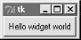Here, instead of making a label, we create an instance of the Tkinter Button class. It's attached to the default top-level as before, on the default TOP packing side. But the main thing to notice here is the button's configuration arguments: we set an option called command to the sys.exit function. For buttons, the command option is the place where we specify a callback handler function to be run when the button is later pressed. In effect, we use command to register an action for Tkinter to call when a widget's event occurs. The callback handler used here isn't very interesting: as we learned in an earlier chapter, the built-in sys.exit function simply shuts down the calling program. Here, that means pressing this button makes the window go away. Just as for labels, there are other ways to code buttons. Example 6-11 is a version that packs the button in place without assigning it to a name, attaches it to the LEFT side of its parent window explicitly, and specifies root.quit as the callback handler -- a standard Tk object method that shuts down the GUI, and so ends the program (really, it ends the current mainloop event loop call). Example 6-11. PP2E\Gui\Intro\gui2b.pyfrom Tkinter import * root = Tk() Button(root, text='press', command=root.quit).pack(side=LEFT) root.mainloop() This version produces the window in Figure 6-8. Because we didn't tell the button to expand into all available space, it does not. Figure 6-8. A button on the left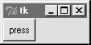In both of the last two examples, pressing the button makes the GUI program exit. In older Tkinter code, you may sometimes see the string "exit" assigned to the command option to make the GUI go away when pressed. This exploits a tool in the underlying Tk library, and is less Pythonic than sys.exit or root.quit. 6.4.4.1 Widget resizing revisited: expansionEven with a GUI this simple, there are many ways to lay out its appearance with Tkinter's constraint-based pack geometry manager. For example, to center the button in its window, add an expand=YES option to the button's pack method call, and generate a window like Figure 6-9. This makes the packer allocate all available space to the button, but does not stretch the button to fill that space. Figure 6-9. side=LEFT, expand=YES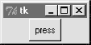If you want the button to be given all available space, and to stretch to fill all of its assigned space horizontally, add expand=YES and fill=X keyword arguments to the pack call, and create the scene in Figure 6-10. Figure 6-10. side=LEFT, expand=YES, fill=X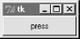This makes the button fill the whole window initially (its allocation is expanded, and it is stretched to fill that allocation). It also makes the button grow as the parent window is resized. As shown in Figure 6-11, the button in this window does expand when its parent expands, but only along the X horizontal axis. Figure 6-11. Resizing with expand=YES, fill=X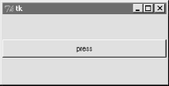To make the button grow in both directions, specify both expand=YES and fill=BOTH in the pack call; now, resizing the window makes the button grow in general, as shown in Figure 6-12. In fact, for a good time, maximize this window to fill the entire screen; you'll get one very big Tkinter button indeed. Figure 6-12. Resizing with expand=YES, fill=BOTH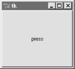In more complex displays, such a button will only expand if all of the widgets it is contained by are set to expand too. Here, the button's only parent is the Tk root window of the program, so parent expandability isn't yet an issue. We will revisit the packer geometry manager when we meet multiple-widget displays later in this tutorial, and again when we study the alternative grid call in Chapter 8. 6.4.5 Adding User-Defined Callback HandlersIn the simple button examples in the previous section, the callback handler was simply an existing function that killed the GUI program. It's not much more work to register callback handlers that do something a bit more useful. Example 6-12 defines a callback handler of its own in Python. Example 6-12. PP2E\Gui\Intro\gui3.pyfrom Tkinter import *
def quit(): # a custom callback handler
print 'Hello, I must be going...' # kill windows and process
import sys; sys.exit()
widget = Button(None, text='Hello event world', command=quit)
widget.pack()
widget.mainloop()
The window created by this script is shown in Figure 6-13. This script and its GUI are almost identical to the last example. But here, the command option specifies a function we've defined locally. When the button is pressed, Tkinter calls the quit function in this file to handle the event. Inside quit, the print statement types a message on the program's stdout stream, and the GUI process exits as before. Figure 6-13. A button that runs a Python function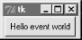As usual, stdout is normally the window that the program was started from, unless it's been redirected to a file. It's a pop-up DOS console if you run this program by clicking it on Windows -- add a raw_input call before sys.exit if you have trouble seeing the message before the pop-up disappears. Here's what the printed output looks like back in standard stream world when the button is pressed; it is generated by a Python function called automatically by Tkinter: C:\...\PP2E\Gui\Intro>python gui3.py Hello, I must be going... C:\...\PP2E\Gui\Intro> Normally, such messages would be displayed in another window, but we haven't gotten far enough to know how just yet. Callback functions usually do more, of course (and may even pop up new windows altogether), but this example illustrates the basics. In general, callback handlers can be any callable object: functions, anonymous functions generated with lambda expressions, bound methods of class or type instances, or class instances that inherit a __call__ operator overload method. For Button press callbacks, callback handlers always receive no arguments (other than a self, for bound-methods). 6.4.5.1 Lambda callback handlersTo make the last paragraph a bit more concrete, let's take a quick look at some other ways to code the callback handler in this example. Recall that the Python lambda expression generates a new, unnamed function object when run. If we need extra data passed in to the handler function, we can register lambda expressions with default argument values to specify the extra data needed. We'll see how this can be useful later in this part of the book, but to illustrate the basic idea, Example 6-13 shows what this example looks like when recoded to use a lambda instead of a def. Example 6-13. PP2E\Gui\Intro\gui3b.pyfrom Tkinter import *
from sys import stdout, exit # lambda generates a function
widget = Button(None, # but contains just an expression
text='Hello event world',
command=(lambda: stdout.write('Hello lambda world\n') or exit()) )
widget.pack()
widget.mainloop()
This code is a bit tricky because lambdas can only contain an expression; to emulate the original script, this version uses an or operator to force two expressions to be run, and writes to stdout to mimic a print. More typically, lambdas are used to pass along extra data to a callback handler using defaults: def handler(X, Y): # would normallly be called with no args
use original X and Y here...
X = something here...
Y = something else
here...
Button(text='ni', command=(lambda save1=X, save2=Y: handler(save1, save2)) )
Although Tkinter invokes command callbacks with no arguments, such a lambda can be used to provide an indirect anonymous function that wraps the real handler call, and passes along information that existed when the GUI was first constructed. Since default arguments are evaluated and saved when the lambda runs (not when its result is later called), they are a way to remember objects that must be accessed again later, during event processing. We'll see this put to more concrete use later. If its syntax confuses you, remember that a lambda expression like the one in the preceding code can usually be coded as a simple nested def statement instead: X = something here... Y = something else here... def func(save1=X, save2=Y): handler(save1, save2) Button(text='ni', command=func) 6.4.5.2 Bound method callback handlersClass bound methods work particularly well as callback handlers too: they record both an instance to send the event to, and an associated method to call. As a preview, Example 6-14 shows Example 6-12 rewritten to register a bound class method, instead of a function or lambda result. Example 6-14. PP2E\Gui\Intro\gui3c.pyfrom Tkinter import *
class HelloClass:
def __init__(self):
widget = Button(None, text='Hello event world', command=self.quit)
widget.pack()
def quit(self):
print 'Hello class method world' # self.quit is a bound method
import sys; sys.exit() # retains the self+quit pair
HelloClass()
mainloop()
On a button press, Tkinter calls this class's quit method with no arguments as usual. But really, is does receive one argument -- the original self object -- even though Tkinter doesn't pass it explicitly. Because the self.quit bound method retains both self and quit, it's compatible with a simple function call; Python automatically passes the self argument along to the method function. Conversely, registering an unbound method like HelloClass.quit won't work, because there is no self object to pass along when the event later occurs. Later, we'll see that class callback handler coding schemes provide a natural place to remember information for use on events too: simply assign it to self instance attributes: class someGuiClass:
def __init__(self):
self.X = something here...
self.Y = something else here...
Button(text='Hi', command=self.handler )
def handler(self):
use self.X, self.Y here...
Because the event will be dispatched to this class's method with a reference to the original instance object, self gives access to attributes that retain original data. 6.4.5.3 Callable class object callback handlersBecause Python class instance objects can also be called if they inherit a __call__ method to intercept the operation, we can pass one of these to serve as a callback handler too, as in Example 6-15. Example 6-15. PP2E\Gui\Intro\gui3d.pyfrom Tkinter import *
class HelloCallable:
def __init__(self): # __init__ run on object creation
self.msg = 'Hello __call__ world'
def __call__(self):
print self.msg # __call__ run later when called
import sys; sys.exit() # class object looks like a function
widget = Button(None, text='Hello event world', command=HelloCallable())
widget.pack()
widget.mainloop()
Here, the HelloCallable instance registered with command can be called like a normal function too -- Python invokes its __call__ method to handle the call operation made in Tkinter on the button press. Notice that self.msg is used to retain information for use on events here; self is the original instance when the special __call__ method is automatically invoked. All four gui3 variants create the same GUI window, but print different messages to stdout when their button is pressed: C:\...\PP2E\Gui\Intro>python gui3.py Hello, I must be going... C:\...\PP2E\Gui\Intro>python gui3b.py Hello lambda world C:\...\PP2E\Gui\Intro>python gui3c.py Hello class method world C:\...\PP2E\Gui\Intro>python gui3d.py Hello __call__ world There are good reasons for each callback coding scheme (function, lambda, class method, callable class), but we need to move on to larger examples to uncover them in less theoretical terms. 6.4.5.4 Other Tkinter callback protocolsFor future reference, also keep in mind that using command options to intercept user-generated button press events is just one way to register callbacks in Tkinter. In fact, there are a variety of ways for Tkinter scripts to catch events:
6.4.5.5 Binding eventsOf all these, bind is the most general, but also perhaps the most complex. We'll study it in more detail later, but to let you sample its flavor now, Example 6-16 uses bind,not command, to catch button presses. Example 6-16. PP2E\Gui\Intro\gui3e.pyfrom Tkinter import *
def hello(event):
print 'Press twice to exit' # on single-left click
def quit(event): # on double-left click
print 'Hello, I must be going...' # event gives widget, x/y, etc.
import sys; sys.exit()
widget = Button(None, text='Hello event world')
widget.pack()
widget.bind('<Button-1>', hello) # bind left mouse clicks
widget.bind('<Double-1>', quit) # bind double-left clicks
widget.mainloop()
In fact, this version doesn't specify a command option for the button at all. Instead, it binds lower-level callback handlers for both left mouseclicks (<Button-1>) and double-left mouseclicks (<Double-1>) within the button's display area. The bind method accepts a large set of such event identifiers in a variety of formats, which we'll meet in Chapter 7. When run, this script makes the same window again (see Figure 6-13). Clicking on the button once prints a message but doesn't exit; you need to double-click on the button now to exit as before. Here is the output after clicking twice and double-clicking once (a double-click fires the single-click callback first): C:\...\PP2E\Gui\Intro>python gui3e.py Press twice to exit Press twice to exit Press twice to exit Hello, I must be going... Although this script intercepts button clicks manually, the end result is roughly the same; widget-specific protocols like button command options are really just higher-level interfaces to events you can also catch with bind. We'll meet bind and all of the other Tkinter event callback handler hooks again in more detail later in this book. First, though, let's focus on building GUIs larger than a single button, and other ways to use classes in GUI work. 6.4.6 Adding Multiple WidgetsIt's time to start building user interfaces with more than one widget. Example 6-17 makes the window shown in Figure 6-14. Example 6-17. PP2E\Gui\Intro\gui4.pyfrom Tkinter import *
def greeting():
print 'Hello stdout world!...'
win = Frame()
win.pack()
Label(win, text='Hello container world').pack(side=TOP)
Button(win, text='Hello', command=greeting).pack(side=LEFT)
Button(win, text='Quit', command=win.quit).pack(side=RIGHT)
win.mainloop()
Figure 6-14. A multiple-widget window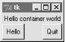This example makes a Frame widget (another Tkinter class), and attaches three other widget objects to it, a Label and two Buttons, by passing the Frame as their first argument. In Tkinter terms, we say that the Frame becomes a parent to the other three widgets. Both buttons on this display trigger callbacks:
Here is the stdout text that shows up on Hello button presses, wherever this script's standard streams may be: C:\...\PP2E\Gui\Intro>python gui4.py Hello stdout world!... Hello stdout world!... Hello stdout world!... Hello stdout world!... The notion of attaching widgets to containers turns out to be at the core of layouts in Tkinter. Before we go into more detail on that topic, though, let's get small. 6.4.6.1 Widget resizing revisited: clippingEarlier, we saw how to make widgets expand along with their parent window, by passing expand and fill options to the pack geometry manager. Now that we have a window with more than one widget, I can let you in on one of the more useful secrets in the packer. As a rule, widgets packed first are clipped last, when a window is shrunk. That is, the order in which you pack items determines which will be cut out of the display if it is made too small -- widgets packed later are cut out first. For example, Figure 6-15 shows what happens when the gui4 window is shrunk interactively. Figure 6-15. gui4 gets small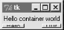Try reordering the label and button lines in the script and see what happens when the window shrinks; the first packed is always the last to go away. For instance, if the label is packed last, Figure 6-16 shows that it is clipped first even though it is attached to the top: side attachments and packing order both impact the overall layout, but only packing order matters when windows shrink. Figure 6-16. Label packed last, clipped first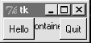Tkinter keeps track of the packing order internally to make this work. Scripts can plan ahead for shrinkage by calling pack methods of more important widgets first. For instance, on the upcoming Tkinter tour we'll meet code that builds menus and toolbars at the top and bottom of the window; to make sure these are lost last as a window is shrunk, they are packed first, before the application components in the middle. Similarly, displays that include scrollbars normally pack them before the items they scroll (e.g., text, lists), so that the scrollbars remain as the window shrinks. 6.4.6.2 Attaching widgets to framesIn larger terms, the critical innovation in this example is its use of frames: Frame widgets are just containers for other widgets, and so give rise to the notion of GUIs as widget hierarchies, or trees. Here, win serves as an enclosing window for the other three widgets. In general, though, by attaching widgets to frames, and frames to other frames, we can build up arbitrary GUI layouts. Simply divide the user interface into a set of increasingly smaller rectangles, implement each as a Tkinter Frame, and attach basic widgets to the frame in the desired screen position. In this script, by specifying win in the first argument to the Label and Button constructors, they are attached to the Frame by Tkinter (they become children of the win parent). win itself is attached to the default top-level window, since we didn't pass a parent to the Frame constructor. When we ask win to run itself (by calling mainloop), Tkinter draws all the widgets in the tree we've built. The three child widgets also provide pack options now: the side arguments tell which part of the containing frame (i.e., win) to attach the new widget to. The label hooks onto the top, and the buttons attach to the sides. TOP, LEFT, and RIGHT are all preassigned string variables imported from Tkinter. Arranging widgets is a bit more subtle than simply giving a side, though, but we need to take a quick detour into packer geometry management details to see why. 6.4.6.3 Packing order and side attachmentsWhen a widget tree is displayed, child widgets appear inside their parents, and are arranged according to their order of packing and their packing options. Because of this, the order in which widgets are packed not only gives their clipping order, it also determines how their side settings play out in the generated display. Here's how the packer's layout system works:
For instance, if you recode the gui4 child widget creation logic like this: Button(win, text='Hello', command=greeting).pack(side=LEFT) Label(win, text='Hello container world').pack(side=TOP) Button(win, text='Quit', command=win.quit).pack(side=RIGHT) You will wind up with the very different display in Figure 6-17, even though you've only moved the label code one line down in the source file (contrast with Figure 6-14). Figure 6-17. Packing the label second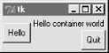Despite its side setting, the label does not get the entire top of the window now, and you have to think in terms of shrinking cavities to understand why. Because the Hello button is packed first, it is given the entire LEFT side of the Frame. Next, the label is given the entire TOP side of what is left. Finally, the Quit button gets the RIGHT side of the remainder -- a rectangle to the right of the Hello button and under the label. When this window shrinks, widgets are clipped in reverse order of their packing: the Quit button disappears first, followed by the label.[11] In the original version of this example, the label spans the entire top side just because it is the first packed, not because of its side option.
6.4.6.4 The packer's expand and fill revisitedBeyond all this, the fill option we met earlier can be used to stretch the widget to occupy all the space in the cavity side it has been given, and any cavity space left after all packing is evenly allocated among widgets with the expand=YES we saw before. For example, coding this way makes the window in Figure 6-18: Button(win, text='Hello', command=greeting).pack(side=LEFT, fill=Y) Label(win, text='Hello container world').pack(side=TOP) Button(win, text='Quit', command=win.quit).pack(side=RIGHT, expand=YES, fill=X) Figure 6-18. Packing with expand and fill options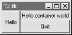To make these all grow along with their window, though, we also need to make the container frame expandable -- widgets only expand beyond their initial packer arrangement if all of their parents expand too: win = Frame() win.pack(side=TOP, expand=YES, fill=BOTH) Button(win, text='Hello', command=greeting).pack(side=LEFT, fill=Y) Label(win, text='Hello container world').pack(side=TOP) Button(win, text='Quit', command=win.quit).pack(side=RIGHT, expand=YES,fill=X) When this code runs, the Frame is assigned the entire top side of its parent as before (that is, the top parcel of the root window); but because it is now marked to expand into unused space in its parent and fill that space both ways, it and all its attached children expand along with the window. Figure 6-19 shows how. Figure 6-19. gui4 gets big with an expandable frame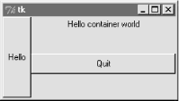6.4.6.5 Using anchor to position instead of stretchAnd as if that isn't flexible enough, packer also allows widgets to be positioned within their allocated space with an anchor option, instead of filling that space with a fill. The anchor option accepts Tkinter constants identifying all eight points of the compass (N, NE, NW, S, etc.) and CENTER as its value (e.g., anchor=NW). It instructs the packer to position the widget at the desired position within its allocated space, if the space allocated for the widget is larger than the space needed to display the widget. The default anchor is CENTER, so widgets show up in the middle of their space (the cavity side they were given) unless they are positioned with anchor, or stretched with fill. To demonstrate, change gui4 to use this sort of code: Button(win, text='Hello', command=greeting).pack(side=LEFT, anchor=N) Label(win, text='Hello container world').pack(side=TOP) Button(win, text='Quit', command=win.quit).pack(side=RIGHT) The only thing new here is that the Hello button is anchored to the north side of its space allocation. Because this button was packed first, it got the entire left side of the parent frame -- more space than needed to show the button, so it shows up in the middle of that side by default as in Figure 6-17 (i.e., anchored to the center). Setting the anchor to N moves it to the top of its side, as shown in Figure 6-20. Figure 6-20. Anchoring a button to the north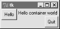Keep in mind that fill and anchor are applied after a widget has been allocated cavity side space by its side, packing order, and expand extra space request. By playing with packing orders, sides, fills, and anchors, you can generate lots of layout and clipping effects, and you should take a few moments to experiment with alternatives if you haven't already. In the original version of this example, for instance, the label spans the entire top side just because it is the first packed. As we'll see later, frames can be nested in other frames too, to make more complex layouts. In fact, because each parent container is a distinct space cavity, this provides a sort of escape mechanism for the packer cavity algorithm: to better control where a set of widgets show up, simply pack them within a nested subframe, and attach the frame as a package to a larger container. A row of pushbuttons, for example, might be easier laid out in a frame of its own than mixed with other widgets in the display directly. Finally, also keep in mind that the widget tree created by these examples is really an implicit one; Tkinter internally records the relationships implied by passed parent widget arguments. In OOP terms, this is a composition relationship -- the Frame contains a Label and Buttons; let's look at inheritance relationships next. 6.4.7 Customizing Widgets with ClassesYou don't have to use OOP in Tkinter scripts, but it can definitely help. As we just saw, Tkinter GUIs are built up as class-instance object trees. Here's another way Python's OOP features can be applied to GUI models: specializing widgets by inheritance. Example 6-18 builds the window in Figure 6-21. Example 6-18. PP2E\Gui\Intro\gui5.pyfrom Tkinter import *
class HelloButton(Button):
def __init__(self, parent=None, **config): # add callback method
Button.__init__(self, parent, config) # and pack myself
self.pack()
self.config(command=self.callback)
def callback(self): # default press action
print 'Goodbye world...' # replace in subclasses
self.quit()
if __name__ == '__main__':
HelloButton(text='Hello subclass world').mainloop()
Figure 6-21. A button subclass in action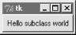This example isn't anything special to look at: it just displays a single button that prints a message and exits when pressed. But this time, it is a button widget we created on our own. The HelloButton class inherits everything from the Tkinter Button class, but adds a callback method and constructor logic to set the command option to self.callback, a bound method of the instance. When the button is pressed this time, the new widget class's callback method is invoked, not a simple function. The **config argument here is assigned unmatched keyword arguments; they're passed along to the Button constructor. We met the config widget method called in HelloButton's constructor earlier; it is just an alternative way to pass configuration options after the fact (instead of passing constructor arguments). So what's the point of subclassing widgets like this? It allows widgets to be configured by subclassing, instead of passing in options. HelloButton is a true button; we pass in configuration options as usual when one is made. But we can also specify callback handlers by overriding the callback method in subclasses, as shown in Example 6-19. Example 6-19. PP2E\Gui\Intro\gui5b.pyfrom gui5 import HelloButton
class MyButton(HelloButton): # subclass HelloButton
def callback(self): # redefine press-handler method
print "Ignoring press!..."
if __name__ == '__main__':
MyButton(None, text='Hello subclass world').mainloop()
Instead of exiting, this MyButton button prints to stdout and stays up when pressed. Here is its standard output after being pressed a few times: C:\PP2ndEd\examples\PP2E\Gui\Intro>python gui5b.py Ignoring press!... Ignoring press!... Ignoring press!... Ignoring press!... Whether it's simpler to customize widgets by subclassing or passing in options is probably a matter of taste. But the point to notice is that Tk becomes truly object-oriented in Python, just because Python is object-oriented: we can specialize widget classes using normal class-based OO techniques. The next example provides yet another way to arrange for specialization. 6.4.8 Reusable GUI Components with ClassesLarger GUI interfaces are often built up as subclasses of Frame, with callback handlers implemented as methods. This structure gives us a natural place to store information between events: instance attributes record state. It also allows us to both specialize GUIs by overriding their methods in new subclasses, and attach them to larger GUI structures to reuse them as general components. For instance, a GUI text editor implemented as a Frame subclass can be attached to and configured by any number of other GUIs; if done well, we can plug such a text editor into any user interface that needs text editing tools. We'll meet such a text editor component in Chapter 9. For now, Example 6-20 is a simple example to illustrate the concept. Script gui6.py produces the window in Figure 6-22. Example 6-20. PP2E\Gui\Intro\gui6.pyfrom Tkinter import *
class Hello(Frame): # an extended Frame
def __init__(self, parent=None):
Frame.__init__(self, parent) # do superclass init
self.pack()
self.data = 42
self.make_widgets() # attach widgets to self
def make_widgets(self):
widget = Button(self, text='Hello frame world!', command=self.message)
widget.pack(side=LEFT)
def message(self):
self.data = self.data + 1
print 'Hello frame world %s!' % self.data
if __name__ == '__main__': Hello().mainloop()
Figure 6-22. A custom Frame in action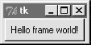This example pops up a single button window. When pressed, the button triggers the self.message bound method to print to stdout again. Here is the output after pressing this button four times; notice how self.data (a simple counter here) retains its state between presses: C:\...\PP2E\Gui\Intro>python gui6.py Hello frame world 43! Hello frame world 44! Hello frame world 45! Hello frame world 46! This may seem like a roundabout way to show a Button (we did it in fewer lines in Examples Example 6-10, Example 6-11, and Example 6-12). But the Hello class provides an enclosing organizational structure for building GUIs. In the examples prior to the last section, we made GUIs using a function-like approach: we called widget constructors as though they were functions and hooked widgets together manually by passing in parents to widget construction calls. There was no notion of an enclosing context, apart from the global scope of the module file containing the widget calls. This works for simple GUIs, but can make for brittle code when building up larger GUI structures. But by subclassing Frame as we've done here, the class becomes an enclosing context for the GUI:
In a sense, entire GUIs become specialized Frame objects, with extensions for an application. Classes can also provide protocols for building widgets (e.g., the make_widgets method here), handle standard configuration chores (like setting window manager options), and so on. In short, Frame subclasses provide a simple way to organize collections of other widget-class objects. 6.4.8.1 Attaching class componentsPerhaps more important, subclasses of Frame are true widgets: they can be further extended and customized by subclassing, and can be attached to enclosing widgets. For instance, to attach the entire package of widgets that a class builds to something else, simply create an instance of the class with a real parent widget passed in. To illustrate, running the script in Example 6-21 creates the window shown in Figure 6-23. Example 6-21. PP2E\Gui\Intro\gui6b.pyfrom sys import exit from Tkinter import * # get Tk widget classes from gui6 import Hello # get the subframe class parent = Frame(None) # make a container widget parent.pack() Hello(parent).pack(side=RIGHT) # attach Hello instead of running it Button(parent, text='Attach', command=exit).pack(side=LEFT) parent.mainloop() Figure 6-23. An attached class component on the right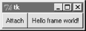This script just adds Hello's button to the right side of parent -- a container Frame. In fact, the button on the right in this window represents an embedded component: its button really represents an attached Python class object. Pressing the embedded class's button on the right prints a message as before; pressing the new button exits the GUI by a sys.exit call: C:\...\PP2E\Gui\Intro>python gui6b.py Hello frame world 43! Hello frame world 44! Hello frame world 45! Hello frame world 46! In more complex GUIs, we might instead attach large Frame subclasses to other container components and develop each independently. For instance, Example 6-22 is yet another specialized Frame itself, but attaches an instance of the original Hello class in a more OO fashion. When run as a top-level program, it creates a window identical to the one shown in Figure 6-23. Example 6-22. PP2E\Gui\Intro\gui6c.pyfrom Tkinter import * # get Tk widget classes
from gui6 import Hello # get the subframe class
class HelloContainer(Frame):
def __init__(self, parent=None):
Frame.__init__(self, parent)
self.pack()
self.makeWidgets()
def makeWidgets(self):
Hello(self).pack(side=RIGHT) # attach a Hello to me
Button(self, text='Attach', command=self.quit).pack(side=LEFT)
if __name__ == '__main__': HelloContainer().mainloop()
This looks and works exactly like gui6b, but registers the added button's callback handler as self.quit, which is just the standard quit widget method this class inherits from Frame. The window this time represents two Python classes at work -- the embedded component's widgets on the right (the original Hello button), and the container's widgets on the left. Naturally, this is a simple example (we only attached a single button here, after all). But in more practical user interfaces, the set of widget class objects attached in this way can be much larger. Imagine replacing the Hello call in this script with a call to attach an already-coded and fully debugged calculator object, and you'll begin to better understand the power of this paradigm. If we code all of our GUI components as classes, they automatically become a library of reusable widgets, which we can combine in other applications as often as we like. 6.4.8.2 Extending class componentsWhen GUIs are built with classes, there are a variety of ways to reuse their code in other displays. To extend Hello instead of attaching it, we just override some of its methods in a new subclass (which itself becomes a specialized Frame widget). This technique is shown in Example 6-23. Example 6-23. PP2E\Gui\Intro\gui6d.pyfrom Tkinter import *
from gui6 import Hello
class HelloExtender(Hello):
def make_widgets(self): # extend method here
Hello.make_widgets(self)
Button(self, text='Extend', command=self.quit).pack(side=RIGHT)
def message(self):
print 'hello', self.data # redefine method here
if __name__ == '__main__': HelloExtender().mainloop()
This subclass's make_widgets method here first builds the superclass's widgets, then adds a second Extend button on the right, as shown in Figure 6-24. Figure 6-24. A customized class's widgets, on the left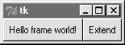Because it redefines the message method, pressing the original superclass's button on the left now prints a different string to stdout (when searching up from self, the message attribute is found first in this subclass, not the superclass): C:\...\PP2E\Gui\Intro>python gui6d.py hello 42 hello 42 hello 42 hello 42 But pressing the new Extend button on the right, added by this subclass, exits immediately, since the quit method (inherited from Hello, which inherits it from Frame) is the added button's callback handler. The net effect is that this class customizes the original, to add a new button and change message's behavior. Although this example is simple, it demonstrates a technique that can be powerful in practice -- to change a GUI's behavior, we can write a new class that customizes its parts, rather than changing the existing GUI code in place. The main code need be debugged only once, and customized with subclasses as unique needs arise. The moral of this story is that Tkinter GUIs can be coded without ever writing a single new class, but using classes to structure your GUI code makes it much more reusable in the long run. If done well, you can both attach already-debugged components to new interfaces, and specialize their behavior in new external subclasses as needed for custom requirements. Either way, the initial up-front investment to use classes is bound to save coding time in the end. 6.4.8.3 Standalone container classesBefore we move on, I want to point out that it's possible to reap most of the benefits previously mentioned by creating standalone classes not derived from Tkinter Frames or other widgets. For instance, the class in Example 6-24 generates the window shown in Figure 6-25. Example 6-24. PP2E\Gui\Intro\gui7.pyfrom Tkinter import *
class HelloPackage: # not a widget subbclass
def __init__(self, parent=None):
self.top = Frame(parent) # embed a Frame
self.top.pack()
self.data = 0
self.make_widgets() # attach widgets to self.top
def make_widgets(self):
Button(self.top, text='Bye', command=self.top.quit).pack(side=LEFT)
Button(self.top, text='Hye', command=self.message).pack(side=RIGHT)
def message(self)):
self.data = self.data + 1
print 'Hello number', self.data
if __name__ == '__main__': HelloPackage().top.mainloop()
Figure 6-25. A standalone class package in action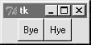When run, the Hye button here prints to stdout, and Bye closes and exits the GUI, much as before: C:\...\PP2E\Gui\Intro>python gui7.py Hello number 1 Hello number 2 Hello number 3 Hello number 4 Also as before, self.data retains state between events, and callbacks are routed to the self.message method within this class. Unlike before, the HelloPackage class is not itself a kind of Frame widget. In fact, it's not a kind of anything -- it only serves as a generator of namespaces for storing away real widget objects and state. Because of that, widgets are attached to a self.top (an embedded Frame), not self. Moreover, all references to the object as widget must descend to the embedded frame -- as in the top.mainloop call to start the GUI. This makes for a bit more coding within the class, but avoids potential name clashes with both attributes added to self by the Tkinter framework, and existing Tkinter widget methods. For instance, if you define a config method in your class, it will hide the config call exported by Tkinter. With the standalone class package in this example, you only get the methods and instance attributes that your class defines. In practice, Tkinter doesn't use very many names, so this is not generally a big concern.[12] It can happen, of course; but frankly, I've never seen a real Tkinter name clash in widget subclasses in some eight years of Python coding. Moreover, using standalone classes is not without other downsides. Although they can generally be attached and subclassed as before, they are not quite plug-and-play compatible with real widget objects. For instance, the configuration calls made in Example 6-21for the Frame subclass fail in Example 6-25.
Example 6-25. PP2E\Gui\Intro\gui7b.pyfrom Tkinter import * from gui7 import HelloPackage # or get from gui7c--__getattr__ added frm = Frame() frm.pack() Label(frm, text='hello').pack() part = HelloPackage(frm) part.pack(side=RIGHT) # fails!--need part.top.pack(side=RIGHT) frm.mainloop() This won't quite work, because part isn't really a widget. To treat it as such, you must descend to part.top before making GUI configurations, and hope that the name top never changes. The class could make this better by defining a method that always routes unknown attribute fetches to the embedded Frame, as in Example 6-26. Example 6-26. PP2E\Gui\Intro\gui7c.pyimport gui7
from Tkinter import *
class HelloPackage(gui7.HelloPackage):
def __getattr__(self, name):
return getattr(self.top, name) # pass off to a real widget
if __name__ == '__main__': HelloPackage().top.mainloop()
But that then requires even more extra coding in standalone package classes. As usual, though, the significance of all these trade-offs varies per application. |
| I l@ve RuBoard |
|